Influencia de las Variables en Modelo predictivo de Potencial
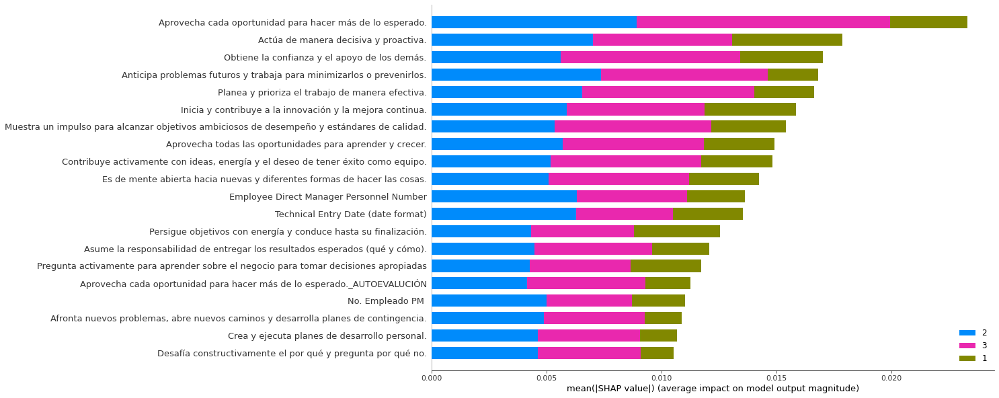
Influencia de las Variables en Modelo predictivo de Desempeño

Influencia Sobre la predicción de la clase "Necesita Mejorar" (Potencial)
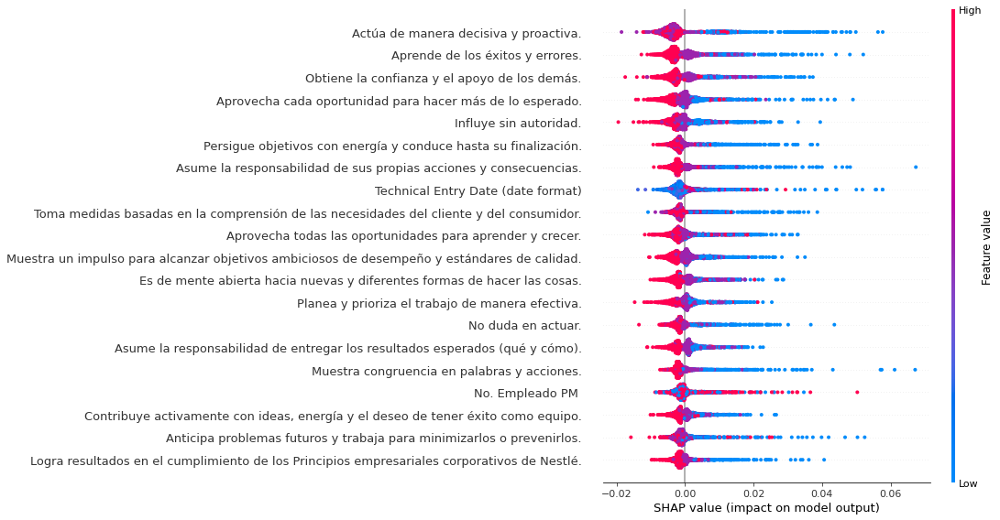
Influencia Sobre la predicción de la clase "Necesita Mejorar" (Desempeño)
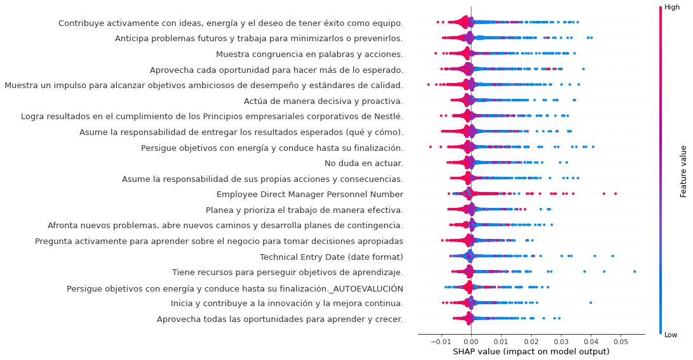
Influencia Sobre la predicción de la clase "Exitoso" (Potencial)
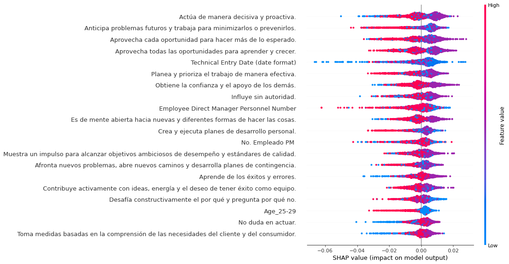
Influencia Sobre la predicción de la clase "Exitoso" (Desempeño)
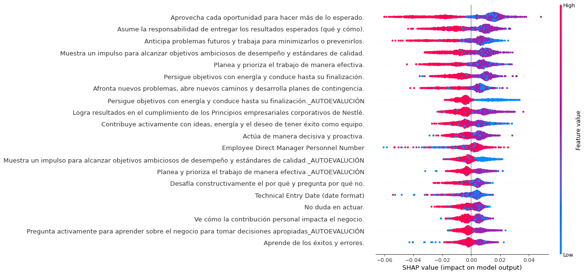
Influencia Sobre la predicción de la clase "Excepcional" (Potencial)
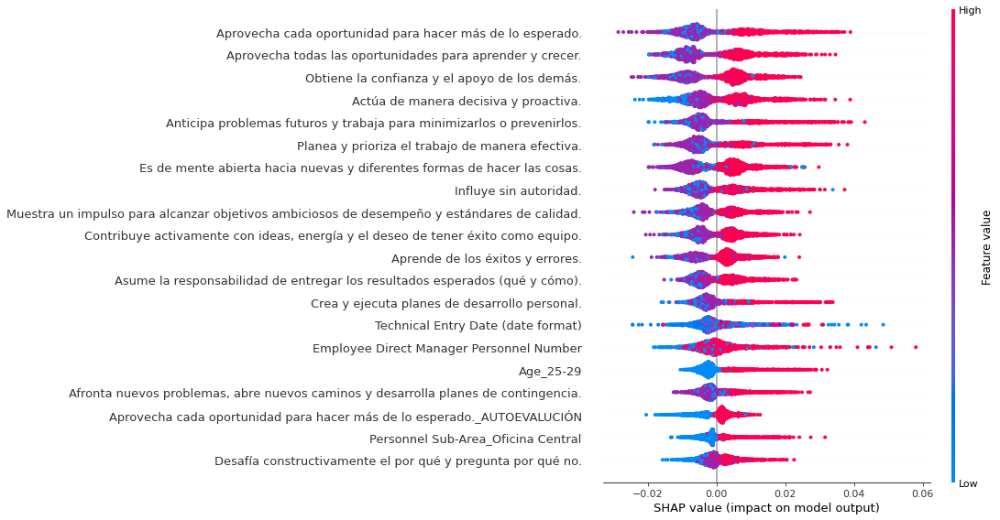
Influencia Sobre la predicción de la clase "Excepcional" (Desempeño)
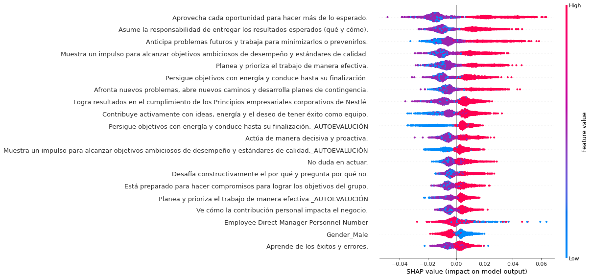
Ejemplo de predicción para la clase "Necesita Mejorar" (Potencial)
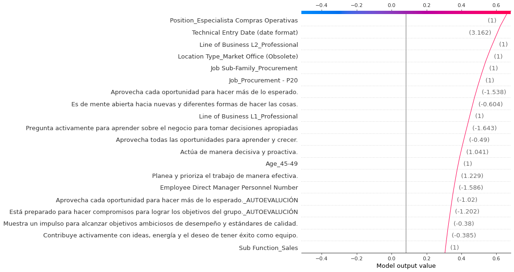
Ejemplo de predicción para la clase "Necesita Mejorar" (Desempeño)

Ejemplo de predicción para la clase "Exitoso" (Potencial)
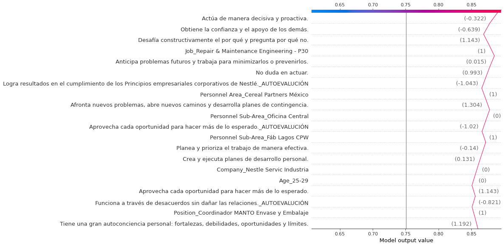
Ejemplo de predicción para la clase "Exitoso" (Desempeño)
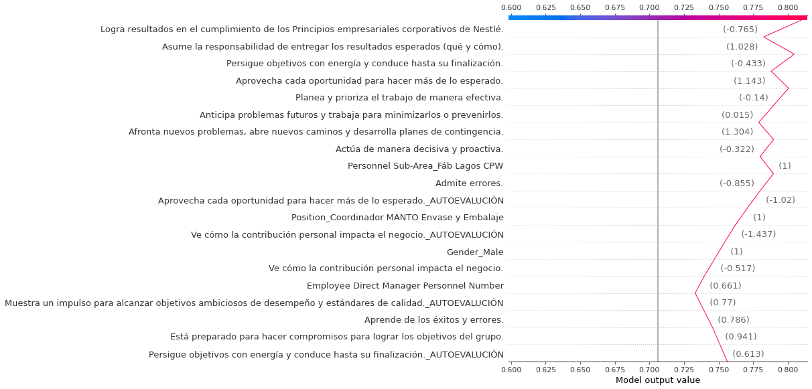
Ejemplo de predicción para la clase "Excepcional" (Potencial)
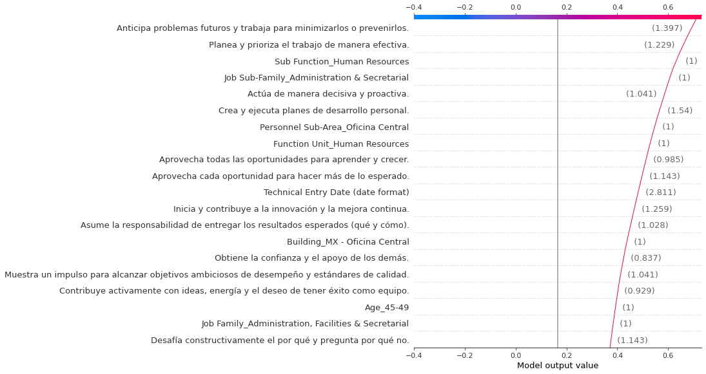
Ejemplo de predicción para la clase "Excepcional" (Desempeño)

Agrupación Natural de los datos (UMAP/t-SNE)
Influencia de las Variables en Modelo predictivo Natural
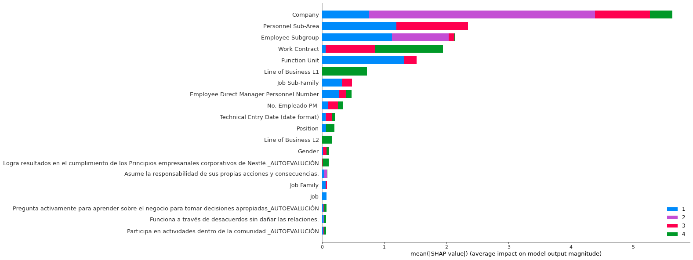
Influencia de las Variables en Modelo predictivo Natural en la Clase 1
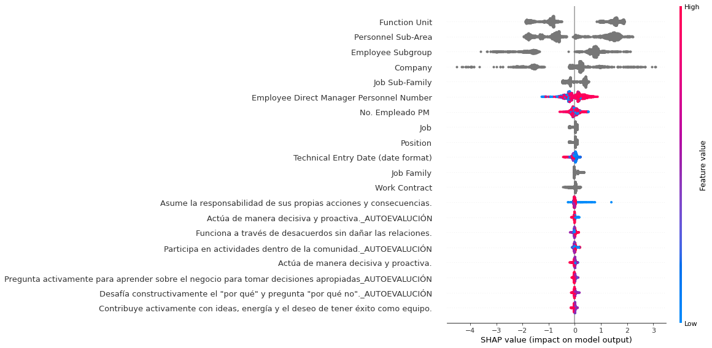
Influencia de las Variables en Modelo predictivo Natural en la Clase 2
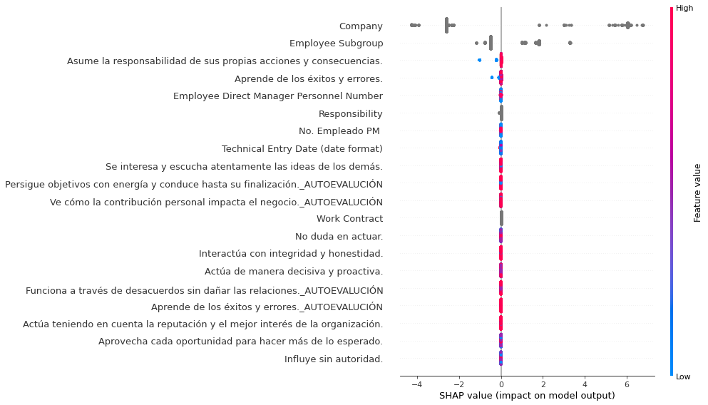
Influencia de las Variables en Modelo predictivo Natural en la Clase 3
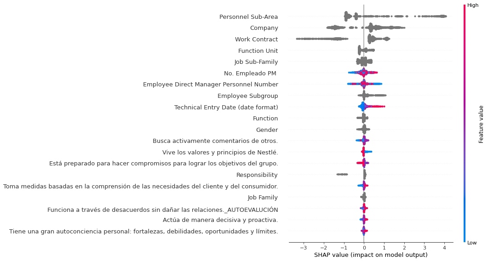
Influencia de las Variables en Modelo predictivo Natural en la Clase 4
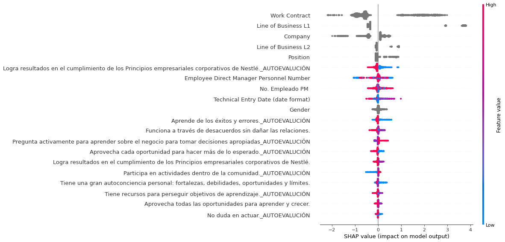
Distribución de Influencia de las Variables en Modelo predictivo Natural en la Clase 1
Distribución de Influencia de las Variables en Modelo predictivo Natural en la Clase 2
Distribución de Influencia de las Variables en Modelo predictivo Natural en la Clase 3
Distribución de Influencia de las Variables en Modelo predictivo Natural en la Clase 4